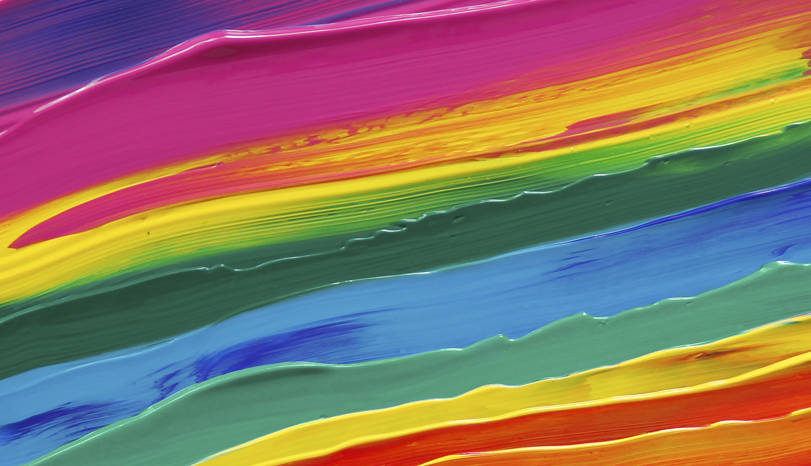

We should argue about colours. Colours are ore more universal than movies and everybody has a favourite colour. Not everybody has a favourite movie, or even likes movies. Therefore, movies are not a good topic to argue over. There's a wide range of colours and mixes of colours to choose from. The most well known colours are
They are also know as primary colours. You can create any colour from mixing primary colours. Favourite colours can be as simple as a primary colour to as complex as a mixed colour like magenta. There is an endless array of colours to choose from which makes it a very interesting topic. Centainly more interesting than arguing about movies. Here's a picture of some wondful colours.
More about colours.
Wikipedia Colours